Porsche representa excelencia, velocidad y diseño alemán. Cada modelo está diseñado para ofrecer una experiencia de conducción única, combinando lujo, tecnología avanzada y un desempeño deportivo excepcional.
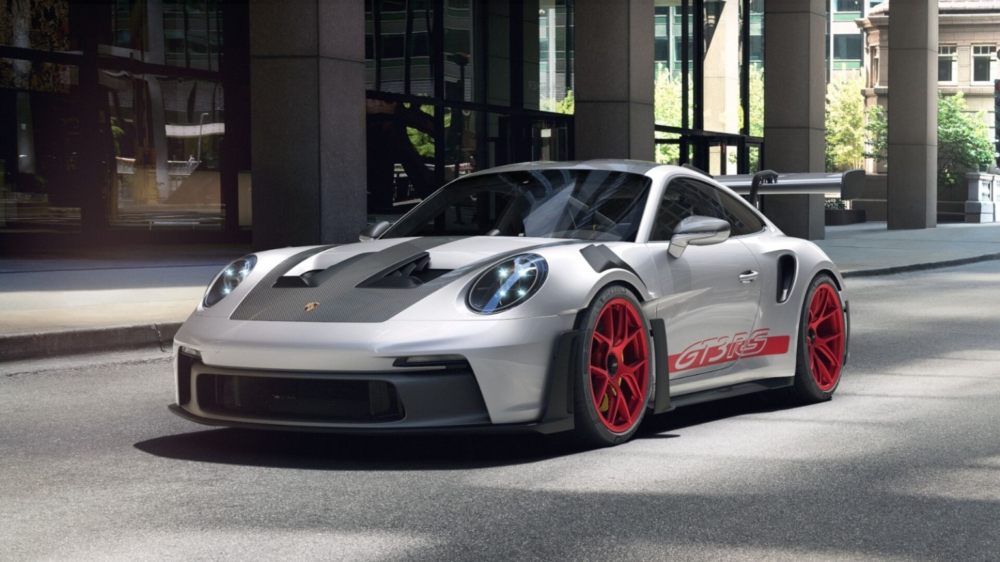

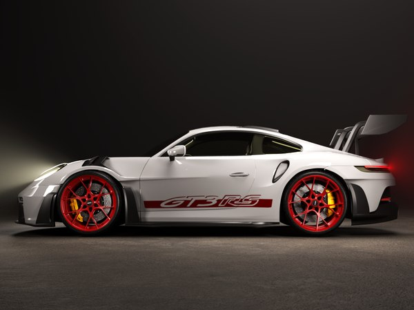
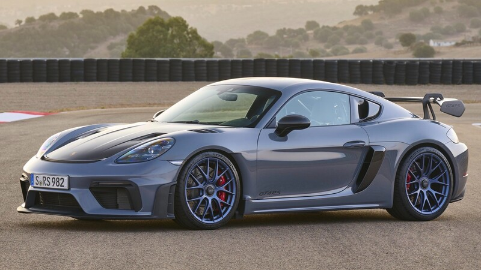
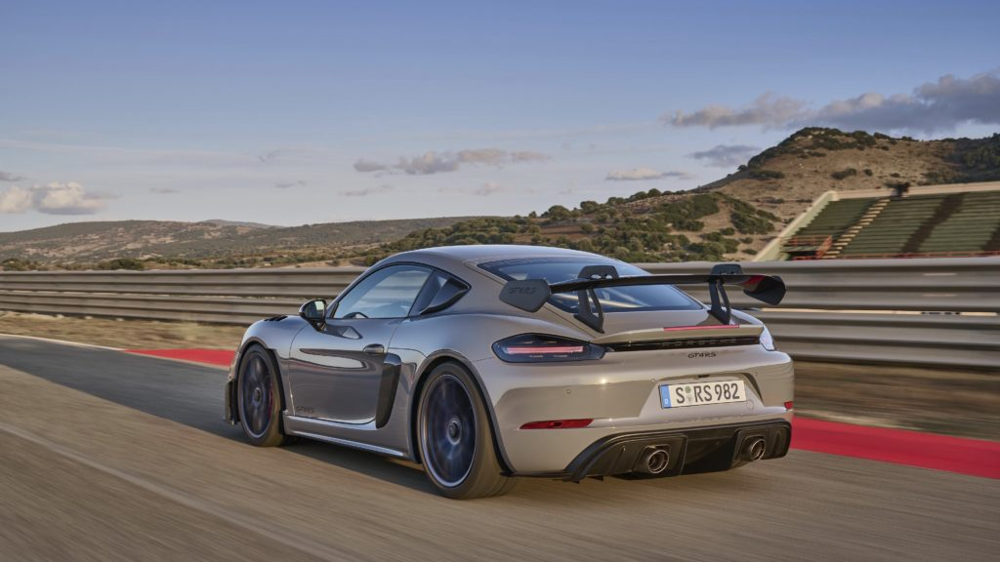
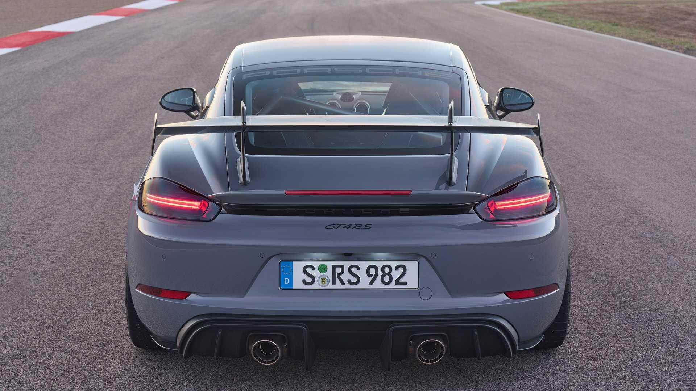
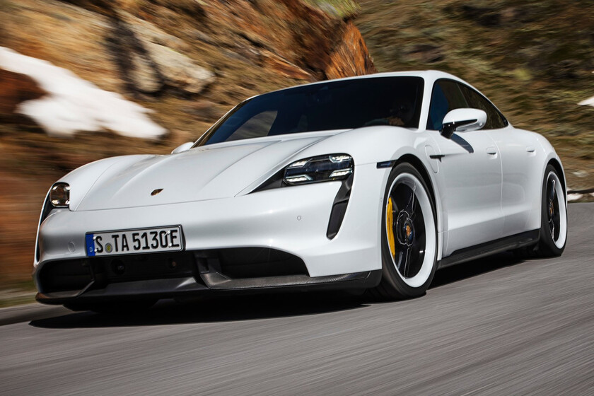

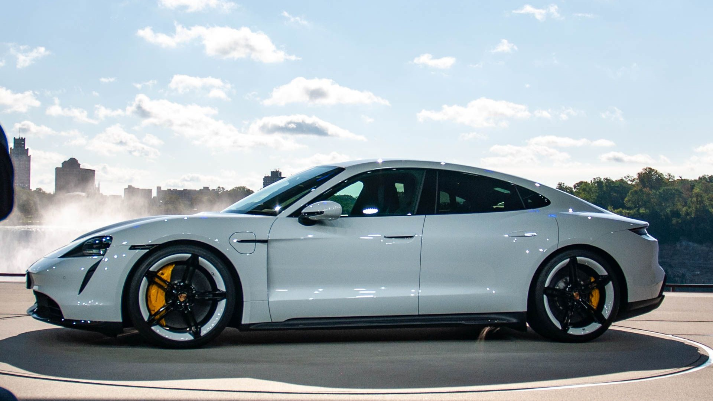
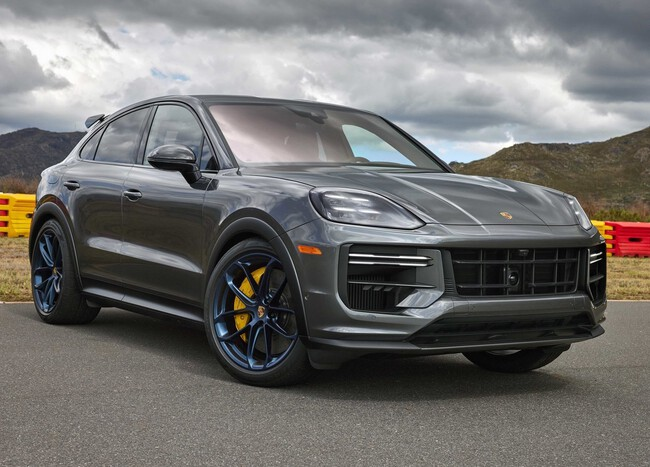
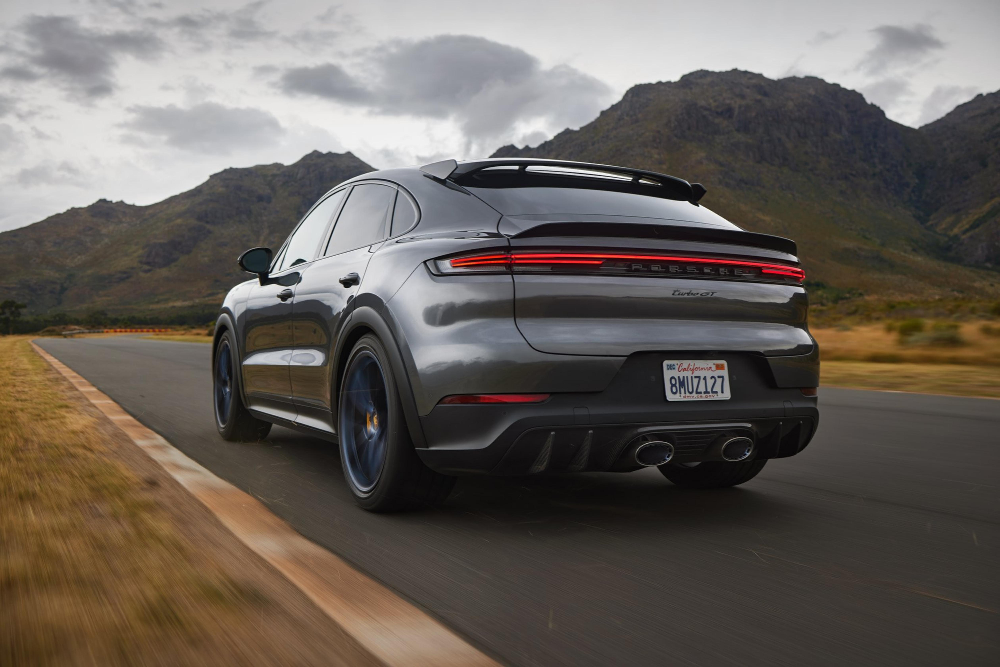

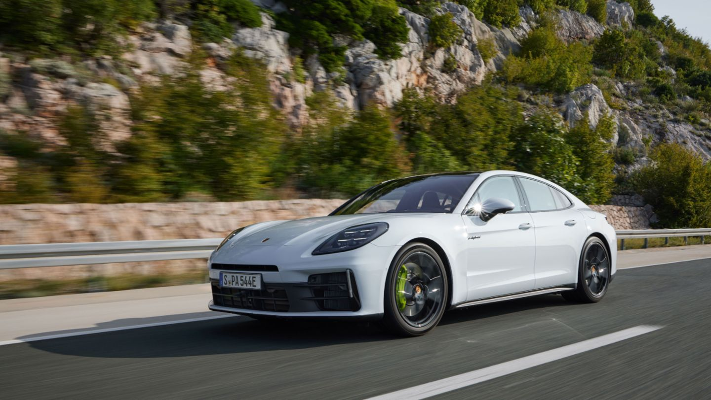
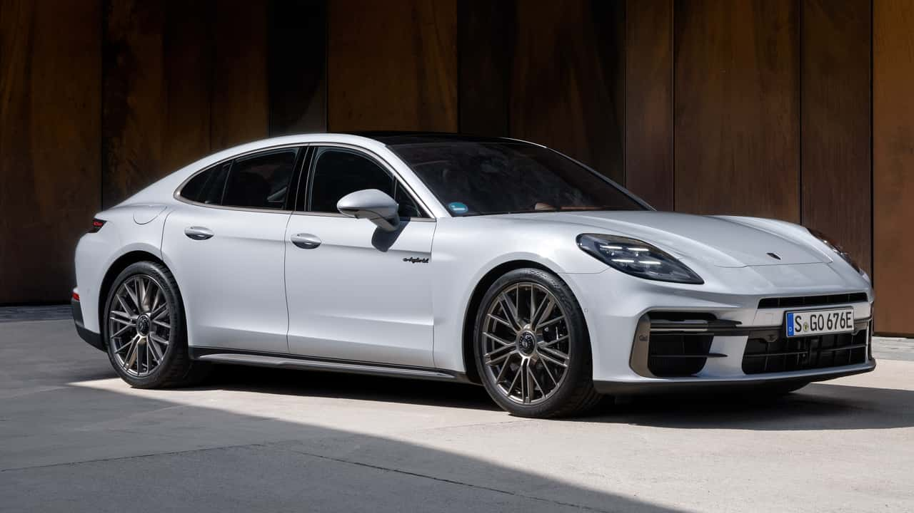

| Modelo | Categoría | Precio Aproximado | Potencia (HP) |
|---|---|---|---|
| Porsche 911 GT3 RS | Deportivo | $4,300,000 MXN aprox. | 518 HP |
| Porsche 718 GT4 RS | Deportivo | $3,200,000 MXN aprox. | 493 HP |
| Porsche Taycan Turbo S | Eléctrico | $4,000,000 MXN aprox. | 750 HP |
| Porsche Cayenne Turbo GT | SUV | $3,500,000 MXN aprox. | 650 HP |
| Porsche Panamera Turbo S | Sedán Deportivo | $3,800,000 MXN aprox. | 620 HP |